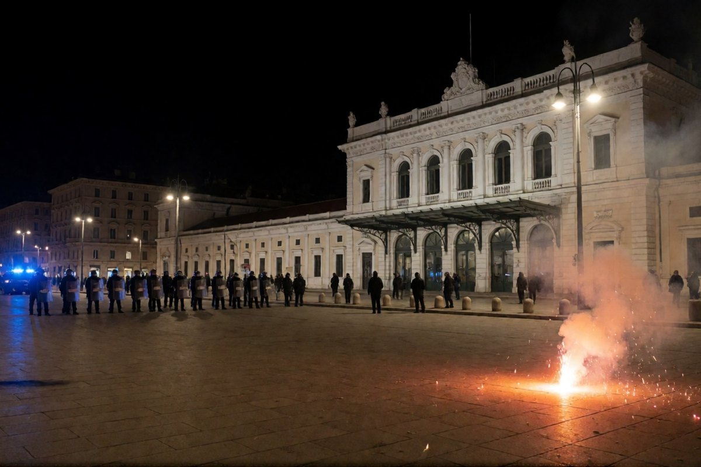

Cronaca · 7 novembre 2026
Trieste, bomba carta sul vicario del questore: tre agenti feriti

Un presidio per due giovani morti in un magazzino abbandonato del Porto Vecchio è finito in scontri. Il vicario Leonardo Boido è stato colpito alla testa ed è già stato dimesso. La procura indaga sull'incendio per omicidio colposo.
di Franco Zanghì
La sera del 6 novembre una manifestazione a Trieste è finita in scontri con la polizia. Tre agenti sono rimasti feriti. Il più grave è il vicario del questore, Leonardo Boido, colpito alla testa da una bomba carta o da un grosso petardo e portato all'ospedale di Cattinara. Nelle ore successive è stato dimesso: il ministro dell'Interno Matteo Piantedosi, che lo ha chiamato al telefono, ha riferito che è già pronto a tornare al lavoro.
I due morti del Magazzino 18
Il presidio era nato per due giovani morti nel Magazzino 18 del Porto Vecchio, un edificio abbandonato dove da tempo trovavano riparo persone senza casa. Secondo la ricostruzione riportata dal Fatto Quotidiano, i due, una ragazza di 21 anni e un ragazzo di 23, sono morti nell'incendio della notte fra l'1 e il 2 novembre: le fiamme sarebbero partite da un fuoco acceso al piano terra da altre persone presenti nell'edificio, e i due, rifugiati in uno stanzino al piano superiore, sarebbero morti per le esalazioni. La procura indaga per omicidio colposo.
Dopo quelle morti la Prefettura ha deciso di chiudere i magazzini 18 e 19. Nei giorni successivi la polizia ha intensificato controlli e sgomberi negli edifici abbandonati della città.
La serata, ora per ora
Il pomeriggio del 6 novembre, in piazza Libertà, davanti alla stazione, si sono radunate circa duecento persone. Il presidio è cominciato pacifico. Poi un gruppo è entrato nell'ex mercato comunale di via Flavio Gioia, uno spazio del Comune, per occuparlo, chiedendo di parlare con il prefetto o con il questore. Dentro è stato aperto un estintore.
La polizia in tenuta antisommossa è intervenuta e fuori sono cominciati gli scontri, con manganellate e lancio di oggetti. È lì che Boido è stato colpito: raggiunto al telefono dai giornalisti, ha raccontato che l'ordigno è esploso quando era già caduto a terra. Un altro funzionario è stato colpito a una gamba da una pietra, un agente del reparto mobile ha riportato contusioni.
Una giovane donna è stata fermata e portata in Questura. Il corteo si è spostato prima su viale Miramare, poi in via del Teatro Romano, sotto la Questura, dove un centinaio di persone ne ha chiesto il rilascio. In tarda serata la donna è stata denunciata per resistenza e rilasciata.
Le reazioni
Oltre a Piantedosi hanno espresso solidarietà il presidente della Regione Friuli Venezia Giulia Massimiliano Fedriga, che ha definito inconcepibile l'attacco a servitori dello Stato, e l'assessore regionale alla Sicurezza Pierpaolo Roberti, che ha parlato di campagna elettorale scomposta. Il Partito democratico regionale ha condannato le violenze e insieme l'immobilismo sull'accoglienza. I sindacati di polizia Siulp e Coisp chiedono posti di accoglienza a bassa soglia e denunciano l'inerzia della politica locale. Il sindaco Roberto Dipiazza ha parlato di effetto calamita e ha ribadito di non volere fare di Trieste un centro per richiedenti asilo.
Il punto
Ieri sera a Trieste ci sono due storie, e non vanno confuse. La prima è quella di due ragazzi morti in un magazzino abbandonato, in una città di confine dove da anni chi arriva dorme dove capita: è una storia vera e merita risposte, su come sono morti e su chi doveva fare qualcosa e non l'ha fatto. La seconda è una bomba carta lanciata contro un uomo in divisa, che poteva ucciderlo. Questa non è una protesta: è violenza. E il primo danno lo fa proprio alla prima storia, perché da stamattina si parla della bomba e non più di quei due ragazzi.
Fonti
- Il Fatto Quotidiano, «Trieste, scontri tra manifestanti e polizia dopo i morti al Porto Vecchio», 7 novembre 2026
- il Giornale, «Guerriglia a Trieste, bomba carta contro la polizia: ferito il vicario del Questore», 7 novembre 2026
- Agensocial, «Due ragazzi morti al Magazzino 18, scontri a Trieste tra manifestanti e polizia», 7 novembre 2026
- Ansa, ripresa dalle testate locali, 6 e 7 novembre 2026
Non è ancora accertato se l'ordigno fosse una bomba carta o un petardo di grosse dimensioni, e non è stato individuato chi lo ha lanciato. Sull'incendio del Magazzino 18 la ricostruzione è investigativa e preliminare: il procedimento per omicidio colposo è aperto e le cause non sono definitivamente accertate. I nomi delle due vittime, pubblicati da alcune testate, qui non compaiono perché finora riportati da una sola fonte.